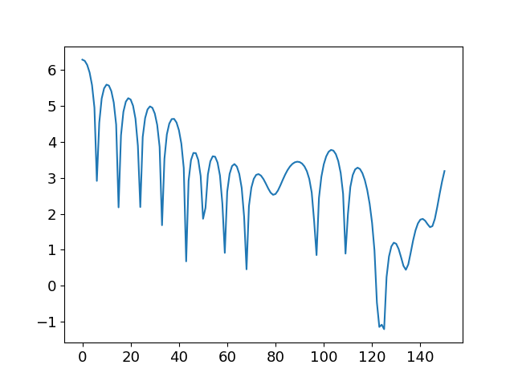

实例 1：使用SymPIC模拟Landau阻尼
1 简介
Landau阻尼是一种等离子体中常见的波－粒子相互作用现象，即静电波在等离子体或相似的环境中的阻尼。对于其更具体的描述，可以参考 Wiki百科 或任意一本等离子体教材。
2 参数设置
Landau阻尼本质上是一种静电现象，但采用电磁PIC也可以模拟，不过要注意的是初始电荷守恒的问题。考虑一个一维的等离子体体，其背景为不可移动的离子，初始时电场和密度有一个静电扰动，随后该静电波含时演化，由于波与粒子相互作用而被阻尼掉。具体参数参考文章 Physics of Plasmas 22, 112504 (2015)。 可按如下设置 SymPIC 的配置文件。
(
begin (
defmacro many-define lst
(
cons '
begin (
map (lambda (x)
(cons 'define x))
lst)))
(
many-define (REAL_DX
2.40000000000000006e-04)
;设置格子宽度为2.4e-4m，该参数用于真实单位换算
(REAL_MU0 (
* 4 m_pi
9.99999999999999955e-08))
;该参数设置磁导率为4e-7pi用于真实单位换算，其中m_pi为内建的pi常数值
(REAL_NE
1.20000000000000000e+16)
;设置真实参考数密度为1.2e16/m^3用于单位换算
(REAL_ME
9.10000000000000006e-31)
(REAL_E
1.59999999999999991e-19)
;设置电子质量和净电荷分别为9.1e-31kg和1.6e-19C用于单位换算
(REAL_C
2.99792458000000000e+08)
;设置光速用于单位换算
(DELTAT
5.00000000000000000e-01)
;设置\Delta t=0.5\Delta x/c
(E (
* REAL_E (
sqrt (
/ REAL_MU0 REAL_ME REAL_DX))))
;归一化的电子净电荷
(CONST_E_DENSITY (
* REAL_NE REAL_DX REAL_DX REAL_DX))
;归一化的参考数密度
(NPG0
512)
; 每格采样点数
(NPM0 (
/ CONST_E_DENSITY NPG0))
; 每采样点代表的真实粒子数
(XMAX
8)
(YMAX
1)
(ZMAX
1)
; 设置每个最小计算单元的三维大小，以格数为单位
(NUM_N_HILBERT
5)
(NUM_N_HILBERT_DIMENSION
1)
(HILBERT_DIR
0)
; 设置Hilbert填充曲线阶数为5，维数为1，扩展方向为0，即x方向，总的模拟区域为256x1x1
(NUM_SPEC
1)
; 设置粒子种数为1
(NUM_TIMESTEP
15001)
(NUM_DUMP_TIMESTEP
100)
; 设置总时间步数为15000，每100步输出一次
(gen_simulate_B
(lambda (x)
(runc "x/(E*REAL_C/REAL_DX*REAL_ME/REAL_E)"))
)
(gen_simulate_E
(lambda (x)
(runc "x/(E*REAL_C*REAL_C/REAL_DX*REAL_ME/REAL_E)"))
)
; 此二函数用于生成归一化的电磁场，其中runc是一个用于将中缀表达式转为s-expression的前缀表达式的宏
(USE_CHECKPOINT
1)
(NUM_CHECKPOINT_TIMESTEP
5000)
; 使用checkpoint，每5000步输出一次checkpoint
(GET_INIT_FILTER_KROOK
(lambda x
0)
)
(GET_INIT_FILTER_E
(lambda x
0)
)
(GET_INIT_FILTER_B
(lambda x
0)
)
(GET_INIT_TEMPERATURE_DIST
(lambda x
1)
)
(NUM_PROCESS
2)
; 设置总MPI进程数为2
(NUM_MAX_RUNTIME
1)
(NUM_RUNTIME
1)
; 设置总runtime数为1
(GET_DEV_TYPE
(lambda (x r)
1)
)
; 使用1号runtime OpenMP
(GET_DEV_ID
(lambda (x r)
0)
)
; 使用0号设备id
(E_0
-1)
(M_0
1)
; E_0与M_0为电子的相对电荷与质量
(GET_MASS
(lambda (i)
(case i (0 (* M_0 NPM0)) (else 1)))
)
; 设置第0种粒子质量为M_0*NPM0
(GET_CHARGE
(lambda (i)
(case i (0 (* E_0 E NPM0)) (else 0)))
)
; 设置第0种粒子电荷为E*M_0*NPM0
(USE_INIT_EB0
1)
; 使用初条件场
(USE_FILTER
0)
; 不使用电磁场过滤
(USE_NP_BOUNDARY
0)
; 不使用非周期边界
(USE_NON_UNI_DENSITY
1)
; 不使用非均匀粒子
(USE_NON_UNI_TEMPERATURE
0)
; 不使用非均匀温度
(USE_INIT_EXT_EB
0)
; 不使用外场
(USE_INIT_V0
0)
; 不使用初始漂移Maxwell分布
(CAL_FUN_ONE_PARA
(
lambda (s x)
(
define s1 (
string->symbol s))
(
if (symbol-binded? s1)
((
eval (
string->symbol s)) x)
(begin
(write-string (multi-concat "Warning: symbol " s1 " is unbounded\n") current-error-port)
(car 0))
)
)
)
(GET_GRID_CACHE_LEN
(lambda (i)
(case i (0 640) (else 0)))
)
; 设置每格第i种粒子预分配空间可存的粒子数
(GET_CU_CACHE_LEN
(lambda (i)
12800)
)
; 设置每Compute Unit第i种粒子用于排序等分配的空间可存的粒子数
(GET_INIT_LOAD
(lambda (i)
NPG0)
)
; 设置初始化时第i种粒子每格采样点参考值
(USE_NON_UNI_CACHE_DIST
0)
(GET_NON_UNI_CACHE_DIST
(lambda x
0)
)
(N_MODE
1)
(E_AMP (gen_simulate_E (
* 1.08000000000000000e+05)))
(GET_INIT_DENSITY_DIST
(lambda (i z y x)
(- 1 (* E_AMP (/ (* 2 m_pi N_MODE) (* X_ALL E_0 E NPM0 NPG0)) (sin (/ (* N_MODE x m_pi 2) X_ALL)))))
)
; 初始电场振幅为108kV/m
(X_ALL (
* XMAX (arithmetic-shift
1 NUM_N_HILBERT)))
; 计算模拟区域x方向为256个格点
(GET_INIT_E0
(lambda (z y x l)
(case l (0 (* E_AMP (cos (/ (* N_MODE x m_pi 2) X_ALL)))) (else 0)))
)
(GET_INIT_B0
(lambda (z y x l)
0)
)
; 此二函数用于设置初始电磁场
(GET_INIT_E
(lambda (z y x l)
0)
)
(GET_INIT_B
(lambda (z y x l)
0)
)
; 此二函数用于设置不变的外电磁场
(GET_INIT_VT
(lambda (i)
1.00000000000000006e-01)
)
; 设置电子热速度为0.07c
(GET_VAR
(
lambda (s)
(
define s1 (
string->symbol s))
(
if (symbol-binded? s1)
(
eval (
string->symbol s))
(begin
(write-string (multi-concat "Warning: symbol " s1 " is unbounded\n") current-error-port)
0)
)
)
)
; 此函数用于动态加载变量
; 以下参数用于其它无关选项
(GET_INIT_V0_x
(lambda x
0)
)
(GET_INIT_V0_y
(lambda x
0)
)
(GET_INIT_V0_z
(lambda x
0)
)
(USE_KGM
0)
(USE_DM
0)
(USE_TORI
0)
(USE_PROFILE
0)
(USE_LHCD_INPUT
0)
(USE_NON_UNI_CACHE_DIST
0)
(GET_NUM_LOCAL_THREAD_FROM_GLOBAL_TID
(lambda x
x)
)
(GET_NPM
(lambda (i)
1)
))
)
3 运行
在sympic运行时，需要设置环境变量STDLIB指向stdlib.scm的位置。在SymPIC的根目录下，执行以下命令以设置该环境变量：
$ export STDLIB=$PWD/stdlib.scm
$ export SYMPIC_DIR=$PWD
将第二节2中的参数保存成文件landau_damping.ss，假设系统中共有4个CPU线程，则使用以下命令运行：
$ export OMP_NUM_THREADS=2
$ mpirun -n 2 $SYMPIC_DIR/sympic landau_damping.ss
运行完毕后，会生成tmpEN, tmpEB和tmpJ这三个文件。可以在python中查看Landau阻尼效果。使用
$ ipython --pylab
启动matplotlib，然后在终端中运行
In [1]: execfile('path-to-SymPIC-dir/cgapsio/pygapsio.py')
In [2]: tEB=GAPS_IO_Load('tmpEB')
In [3]: tEB=reshape(tEB,[len(tEB)/2,2,256,3])
In [4]: ftEB=fftn(tEB[:,0,:,0],axes=[1])
In [5]: plot(log(abs(real(ftEB[:,1]))));
如一切正常，类似下图的静电波模式为1的振幅含时演化将被画出。
